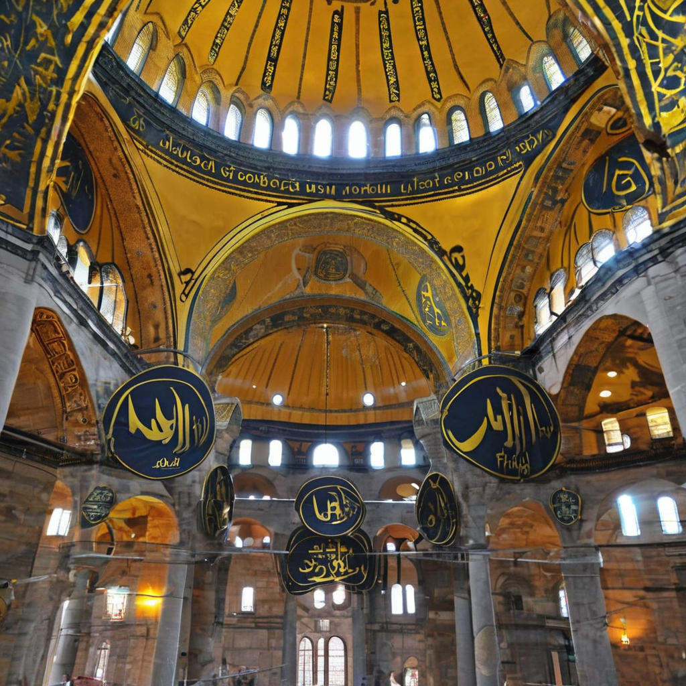
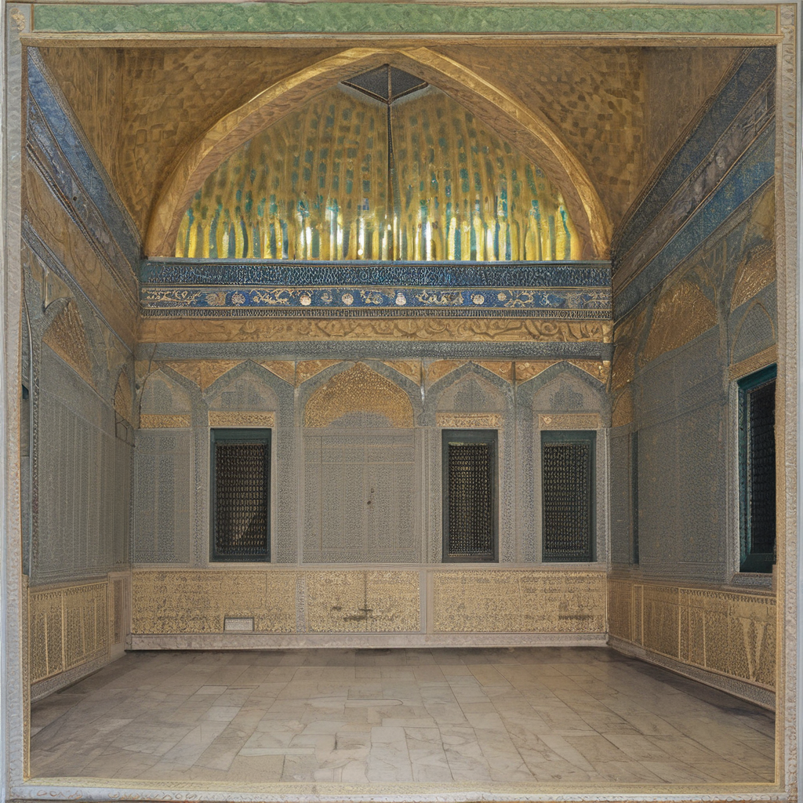
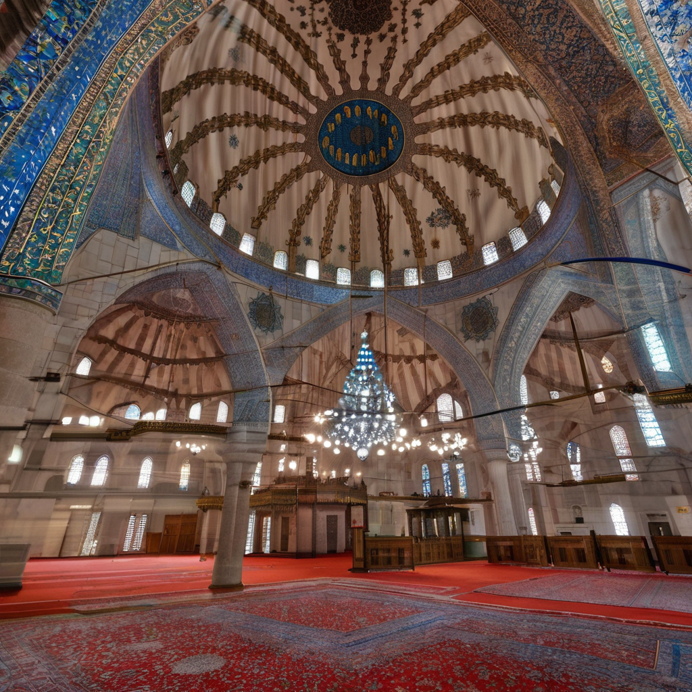
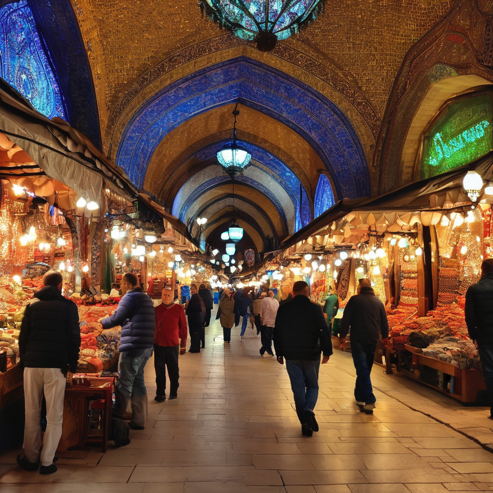

Chris's traveling suggestions - Turkey Istanbual
Turkey is a vibrant country that straddles both Europe and Asia, rich in history and culture. Known for its diverse landscapes, including stunning coastlines and mountainous regions, Turkey boasts ancient ruins, bustling bazaars, and delicious cuisine. Its unique blend of East and West makes it a fascinating destination for travelers.

1. Hagia Sophia, Istanbual
Hagia Sophia, an architectural masterpiece in Istanbul, was completed in 537 AD under Emperor Justinian I as a cathedral. Renowned for its massive dome and mesmerizing mosaics, it exemplifies Byzantine architecture and artistry. The building served as the world’s largest cathedral for nearly 1,000 years before being converted into a mosque in 1453 following the Ottoman conquest. In 1935, it became a museum, showcasing its rich history and diverse cultural influences. In 2020, Hagia Sophia was reconverted into a mosque, yet it remains open to visitors. Today, it stands as a symbol of Istanbul's complex heritage and a testament to human creativity. 
2. Topkapi Palace, Istanbual
Topkapi Palace, located in Istanbul, served as the primary residence of Ottoman sultans for over 400 years. Constructed in the 15th century, this sprawling complex features stunning architecture, lush gardens, and intricate tile work. Visitors can explore various courtyards, including the Imperial Harem, where royal families lived. The palace houses remarkable collections, including exquisite weaponry, manuscripts, and the famed Topkapi Dagger. Its breathtaking views of the Bosphorus and Golden Horn add to its allure. Now a museum, Topkapi Palace offers a glimpse into the opulence and rich history of the Ottoman Empire, making it a must-visit for travelers. 
3. Blue Mosque, Istanbual
The Blue Mosque, or Sultan Ahmed Mosque, is an iconic landmark in Istanbul, renowned for its stunning architecture and breathtaking interior. Completed in 1616, it features six elegant minarets and a grand dome surrounded by smaller domes. The mosque’s interior is adorned with over 20,000 handmade blue tiles, which give it its nickname. Light filters through beautiful stained glass windows, creating a serene atmosphere. The spacious courtyard enhances its grandeur, inviting visitors to appreciate its beauty. As an active place of worship, the Blue Mosque embodies the harmony of Islamic art and architecture, making it a must-see destination for travelers. 